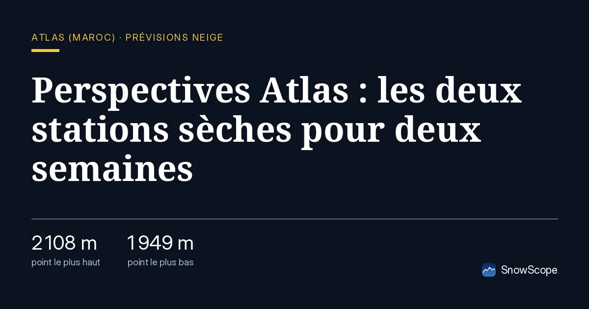

Perspectives Atlas : les deux stations sèches pour deux semaines
SnowScope de neige ne montre aucune chute de neige significative aux deux stations Jbel Hebri ou Oukaïmeden au cours des deux prochaines semaines. Les deux stations resteront sèches jusqu'au début décembre, avec moins de 1 cm attendu sur toute la région de l'Atlas.
Consultez les prévisions neige en temps réel pour Jbel Hebri sur l'application SnowScopeHauteurs de neige, alertes poudreuse et carte 3D, gratuitement.
Aucune neige en vue
J'ai observé les montagnes de l'Atlas à travers de nombreux automnes secs, et cette période en ressemble à beaucoup d'autres. Toute la région verra au maximum 1 cm de neige nouvelle dans les 14 prochains jours, sans que certains endroits n'atteignent même 20 cm.
La zone couverte de neige dans l'Atlas a diminué de 20 km² le 16 novembre à seulement 10 km² aujourd'hui, et notre prévision montre qu'elle restera à ce bas niveau le 21 novembre.
| Station | Hauteur de neige | Neige fraîche, 72 h | Attendu, jours suivants | Sommet |
|---|---|---|---|---|
| Jbel Hebri | 0 cm | 0 cm | 0 cm | 2 108 m |
| Oukaïmeden | 0 cm | 0 cm | 0 cm | 3 258 m |

Aucune altitude ne vous aidera
Je découvre souvent que les pentes les plus hautes conservent la neige lorsque les terres plus basses n'en ont pas, mais pas cette fois. Sur le terrain supérieur d'Oukaïmeden au-dessus de 3000 m, SnowScope donne zéro nouvelle neige. La même chose est vraie à partir de 2500 m sur toutes les montagnes que nous suivons. Même le pic d'Oukaïmeden à 3258 m ne verra rien tomber au cours des 14 prochains jours.
C'est l'histoire d'un système de haute pression qui éloigne les tempêtes de l'Atlantique de l'Afrique du Nord. Sans une tempête pour pousser l'humidité à l'intérieur des terres et la forcer à monter les pentes, les montagnes restent claires.

Ce que nous voyons sur le terrain aujourd'hui
En ce moment, aucune des deux stations n'a de neige mesurable sur les pentes supérieures. Les deux sont à zéro épaisseur, ce qui est normal pour la mi-novembre dans cette partie du monde, mais cela signifie que les skieurs n'ont pas de base pour travailler. Les minces plaques qui auraient pu subsister de l'automne précédent ont disparu.

Perspectives plus lointaines
Les hivers passés dans l'Atlas montrent que la neige arrive souvent en décembre, avec les chutes les plus importantes en janvier et février. Cette prévision ne concerne que deux semaines, la patience est donc nécessaire. La période sèche que nous voyons maintenant ne signifie pas que la saison est perdue ; cela signifie attendre que le régime météorologique change. Quand cela se fera, les hauts pics réagiront rapidement.
Que faire maintenant
Si vous prévoyez un séjour dans l'Atlas, ne comptez pas skier pendant au moins deux semaines. Utilisez ce temps pour explorer les pistes à pied, reconnaître le terrain et préparer votre camp de base. Revérifiez en début décembre pour voir plus loin dans l'hiver. Les montagnes n'ont pas terminé ; elles se reposent simplement.
Conseils aux skieurs
- Évitez les stations pour le moment. Aucune neige ne tombera dans les deux prochaines semaines à aucune altitude au-dessus de 1000 m sur l'Atlas.
- Revenez vérifier la prévision fin novembre, quand le tableau pour début décembre sera plus clair et les régimes météorologiques pourraient avoir changé.
- Si vous êtes en montagne pour d'autres raisons, restez à l'écart des terrains à haute altitude jusqu'au retour de la neige ; les rochers sont près de la surface sous une couverture mince, où elle existe du tout.
- Les hivers passés montrent que la neige forte en décembre et janvier est probable, alors ne renoncez pas à la saison en raison de cette sécheresse de deux semaines.
À propos de ces chiffres
Les hauteurs de neige des stations sont la neige la plus épaisse sur le haut du domaine à la date indiquée ; ce sont des estimations pour une zone, pas une mesure en un point. Les prévisions peuvent changer. Consultez toujours le bulletin d'avalanche officiel avant le hors-piste.
Citer ce bulletin
Pour la recherche, l'enseignement ou la presse : chiffres et graphiques réutilisables librement sous CC BY 4.0 avec cette citation.
SnowScope (2026), Perspectives Atlas : les deux stations sèches pour deux semaines, https://snowscope.app/blog/fr/2026/11/atlas-morocco-2-week-snow-forecast-maps-18-november-2026.html, consulté le 2026-11-18
SnowScope (Atlas Labs). (2026, November 18). Perspectives Atlas : les deux stations sèches pour deux semaines. SnowScope snow reports. https://snowscope.app/blog/fr/2026/11/atlas-morocco-2-week-snow-forecast-maps-18-november-2026.html
BibTeX
@misc{snowscope2026atlasmorocco2weeksnowfor,
author = {{SnowScope (Atlas Labs)}},
title = {Perspectives Atlas : les deux stations sèches pour deux semaines},
year = {2026},
month = nov,
howpublished = {\url{https://snowscope.app/blog/fr/2026/11/atlas-morocco-2-week-snow-forecast-maps-18-november-2026.html}},
note = {Published 2026-11-18 10:56 UTC; accessed 2026-11-18}
}· CC BY 4.0 · Méthodes, données et outils →
Jbel Hebri : neige et température selon l'altitude, cet hiver vs l'hiver dernier (outils) →
Suivre Jbel Hebri
Gratuit : un message quand la neige arrive, et la météo chaque matin.
Autres bulletins neige

Oukaïmeden à la mi-décembre : 16 cm à mi-pente dans un hiver typique, 50 cm ou plus dans 11 % des hivers seulement. Date par date, ce que disent 46 hivers.

Jusqu'où la neige est descendue, quand elle est partie, et comment cet hiver se compare à 2008-09 et aux années sèches.

À l'altitude d'Oukaïmeden, notre série de 46 hivers montre 12 % de jours de neige en moins ; plus bas, le signal se perd. Ce que l'on sait.